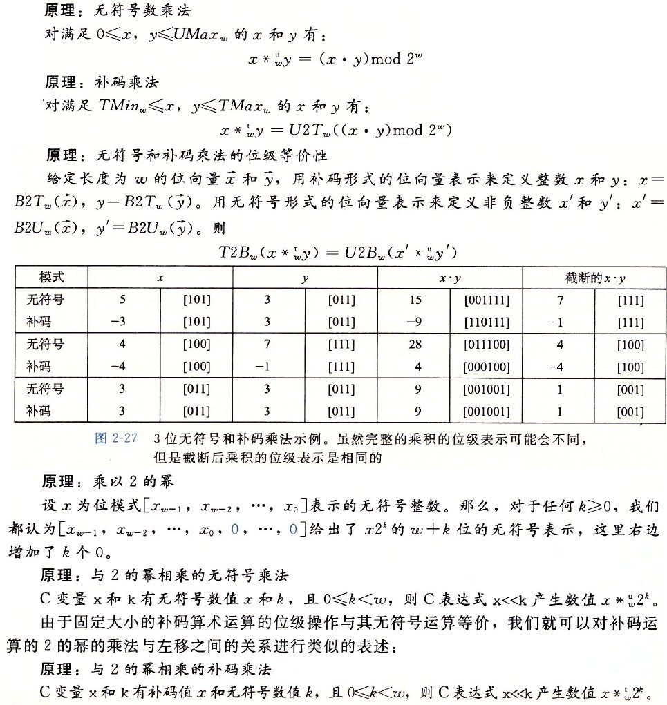
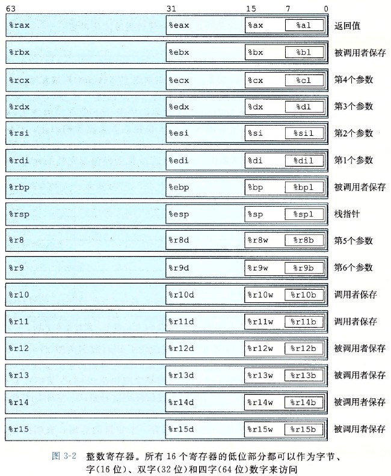
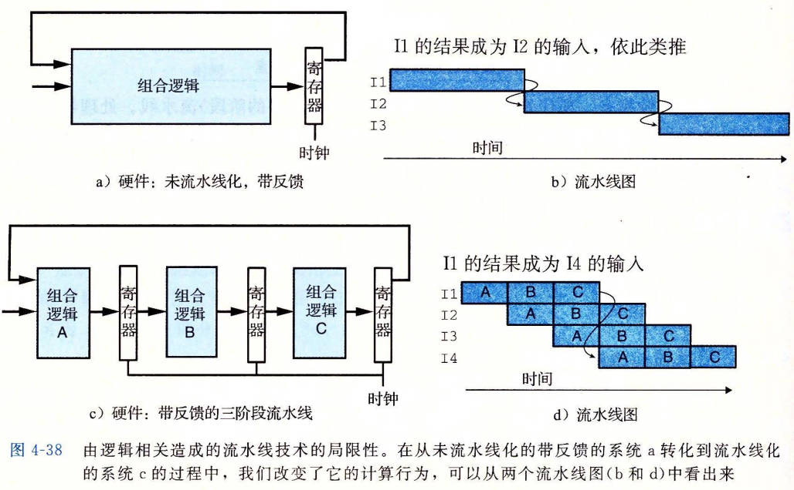

Computer System
Table of Contents
Computer System note.
<!– more –>
Computer Systems: A Programmer's Perspective
第一部分程序结构和执行
2 信息的表示和处理
整数
该部分用到的一些记号说明如下：


有符号数和无符号数之间的转换

// 有符号数和无符号数之间的转换 //// 强制类型转换的结果保持位值不变，只是改变了解释这些位的方式。 short int v=-12345; unsigned short uv = (unsigned short) v; printf("v = %d, uv = %u\n", v, uv); // v = -12345, uv = 53191; // 扩展一个数字 short sx = -12345; // -12345 unsigned short usx = sx; // 53191 int x = sx; // -12345 unsigned ux = usx; // 53191 // 截断数字 int x = 53191; short sx = (short) x; // -12345 int y = sx; // -12345
移位运算
对于一个位表示为[X(w-1), X(w-2), ···, X(0)]的操作数 x：
左移操作：C 语言表达式 x<<k 会生成一个值，其位表示为[X(w-k-1), X(w-k-2), ···, X(0), 0, ···, 0]
逻辑右移操作：逻辑右移在左端补 k 个 0，结果为[X(w-k-1), X(w-k-2), ···, X(0), 0, ···, 0]
算术右移操作：算术右移在左端补 k 个最高有效位的值，结果为[X(w-1), X(w-1), ···, X(w-1), X(w-2), ···, X(k)]

整数的运算


上图展示了加减运算，即加减运算产生的溢出

上图展示了乘法运算
上图展示了除法运算
加法、减法、位级运算和移位只需要 1 个时钟周期
乘法指令在比较老的 CPU 上需要 10 个或者更多时钟周期(Intel Core i7 Haswell 上需要 3 个时钟周期)
除法指令在比较老的 CPU 上需要 30 个或者更多时钟周期.
可以将乘法转化为加法、减法、移位的组合，例如：
14 = 2^3 + 2^2 + 2^1 所以 x*14=(x<<3)+(x<<2)+(x<<1)
14 = 2^4 - 2^1 所以 x*14=(x<<4)-(x<<1)
任何一个整数都可以表示为 2 的幂次之和，所以乘法都可以转化为位移和加法操作。但是只有当乘法转化为少量的移位、加法和减法时，编译器才会执行这种转化，从而优化性能。
当一个整数为 2 的幂次时，可以将除该整数转化为位移操作。而整数不为 2 的幂次时，则无法像乘法那样转化为位移操作了。
浮点数
浮点数表示
下图展示了 IEEE 浮点数表示的规则：

下图展示了 8 位浮点数表示的示例：

下图展示了 32 位浮点数表示的示例：

浮点数表示的连续性，可以将浮点数的表示有一种更直观的理解：
e 间隔 1 的数落在 \([2^E, 2^{E+1})\) 范围内，并且这个范围内，两个相邻的浮点数的间隔为 \(2^{E-23}\) (以 float 为例)
浮点数精度值以指数变化，E越大精度越小，E越小精度越大(精度值为相邻浮点数之间的间隔)。e全 0 时，E最小（此时 float 类型对应的 E 为 1-126=-126），此时精度最大（此时 float 类型对应的精度为 \(2^{-126-23}=2^{-149}\) ）：

./ComputerSystem/float_precision_illustrate.ggb
- 浮点数象形表示法 https://zhuanlan.zhihu.com/p/138845520
- Floating Point Visually Explained https://fabiensanglard.net/floating_point_visually_explained/index.html
- 浮点数内存表示工具 https://www.h-schmidt.net/FloatConverter/IEEE754.html
舍入
舍入的一个关键问题是在两个可能值的中间如何确定舍入方向。IEEE 浮点格式定义了四种不同的舍入方式。
| 方式 | 1.40 美元 | 1.60 美元 | 1.50 美元 | 2.50 美元 | -1.50 美元 |
|---|---|---|---|---|---|
| 向偶数舍入 | 1 | 2 | 2 | 2 | -2 |
| 向零舍入 | 1 | 1 | 1 | 2 | -1 |
| 向下舍入 | 1 | 1 | 1 | 2 | -2 |
| 向上舍入 | 2 | 2 | 2 | 3 | -1 |
向偶数舍入也被称为向最接近的值舍入，其为默认的方式。给定值为两个可能值的中间值时，向偶数舍入将数字向上或者向下舍入，使得结果的最低有效数字为偶数。（例如：上面向偶数舍入将 1.5 和 2.5 都舍入为 2）
向偶数舍入应用于二进制数时，最低有效位的值为 0 认为是偶数，值为 1 认为是奇数。只有对于形如 XX···X.YY···Y100···0 的二进制位模式的数，这种舍入方式才有效（此时的值是精度范围内两个值的中间值，如 1.5 是 2 和 1 的中间值），其中 X 和 Y 表示任意位值，最右边 Y 是要被舍入的位置(精度截止到最右边的 Y)。例如：

浮点数运算
- 浮点数算术运算

下图展示了，浮点数加法运算时，舍入所导致的误差范围：

下图展示了，从浮点运算导出的一些结论：

- Error Propagation
下图展示了 Forward Error Analysis 和 Backword Error Analysis:
下图展示了对浮点计算误差的分析和定界：
- Running Error Analysis
除了通过代数的方法来得出误差范围，也可以让计算机为我们做这项工作，这种方式被称为 running error analysis.其背后的理念是，每次执行浮点运算时，同时计算累积到当前计算的误差范围。
具体的实现参考 ../graphics/PhysicallyBasedRendering.html#org1f4006f
- Misc
v>0 v/0 = Infinity
v<0 v/0 = -Infinity
v>0 v*Infinity = Infinity
v<0 v*Infinity = -Infinity
0*infinity = NaN
Infinity - Infinity = NaN
Infinity + Infinity = Infinity
NaN + v = NaN
NaN 和任意数字的比较都为 false
- 浮点数加法是可交换的。
- 浮点数加法不具有结合性（因为舍入或溢出）。
(3.14+1e10)-1e10 = 0
3.14+(1e10-1e10) = 3.14
1e10 是 C/C++规定的浮点数的科学计数写法,意思是 1.0x10 的 10 次方 - 浮点数加法满足单调性属性：如果 a>=b,那么对于任何 a、b 以及 x 的值，除了 NaN，都有 x+a>=x+b。
- 浮点数乘法是可交换的。
- 浮点数乘法不具有结合性（因为舍入或溢出）。
(1e20*1e20)*1e-20 为无穷大
1e20*(1e20*1e-20) 为 1e20 - 浮点乘法在加法上不具备分配性。
1e20*(1e20-1e20) = 0
1e20*1e-20-1e20*1e-20 = NaN - 浮点乘法满足下列单调性：对于任何 a、b、c,并且 a、b、c 都不为 NaN,浮点乘法满足
a>=b 且 c>=0 则 a*c>=b*c
a>=b 且 c<=0 则 a*c<=b*c
无符号或补码的乘法没有这些单调性属性，因为溢出时会取模。
- 浮点数加法是可交换的。
- Tips
本节内容部分来自 Physically Based Rendering_v3_en 3.9 节 Managing Rounding Error.
3 程序的机器级表示
程序编码
机器级代码
机器级编码使用了两种抽象：
- 由指令集体系结构或指令集架构（Instruction Set Architecture, ISA）来定义机器级程序的格式和行为，它定义了处理器状态、指令的格式，以及每条指令对状态的影响。大多数 ISA 将程序的行为描述成好像每条指令都是按顺序执行的，一条指令结束后，下一条再开始。处理器硬件远比描述的精细复杂，它们并发执行许多指令，但是采取措施保证整体行为与 ISA 指定的顺序执行的行为完全一致。
- 机器级程序使用的内存地址是虚拟地址，提供的内存模型看上去是一个非常大的字节数组。存储器系统的实际实现是将多个硬件存储器和操作系统软件组合起来。
x86-64 的机器代码和原始 C 代码差别非常大。一些通常对 C 语言程序员隐藏的处理器状态都是可见的：
- 程序计数器（通常称为“PC”，在 x86-64 中用%rip 表示） 其给出将要执行的下一条指令在内存中的地址
- 整数寄存器文件 其包含 16 个命名的位置，分别存储 64 位的值。这些寄存器可以存储地址（对应于 C 语言的指针）或整数数据。有的寄存器被用来记录某些重要的程序状态，而其他的寄存器用来保持临时数据，例如过程的参数和局部变量，以及函数的返回值。
- 条件码寄存器 其保存着最近执行的算术或逻辑指令的状态信息。他们用来实现控制或数据流中的条件变化，比如说用来实现 if 和 while 语句。
- 一组向量寄存器 其可以存放一个或多个整数或浮点数值。
# -Og 指示编译器生成符合原始C代码整体结构的机器代码， 使用较高级别优化产生的代码会严重变形，以至于机器代码和源代码之间的关系非常难以理解 gcc -Og main.c -o prog
Code Example
- Example 1
int append_val = 10; int main() { int val = 1; val = val + append_val; val = val + 2; char* my_s_1 = "0123456789abcdefg-hello world "; char* my_s_2 = "0123456789abcdefg-ABCDEFG"; int c = my_s_1[val] + my_s_2[val]; return c; }
# 执行下面命令对程序进行编译生成 test_local.s汇编代码 gcc -S test_local.c -o test_local.s
## ;## 段定义和版本信息 .section __TEXT,__text,regular,pure_instructions ;## 定义了代码段，其中`.text`段通常包含程序的可执行代码。 .macosx_version_min 10, 12 ;## 指定目标操作系统为 macOS 10.12 或更高版本。 ;## 函数声明 .globl _main ;## 声明`_main`函数为全局，使得其他地方可以调用它。 .p2align 4, 0x90 ;## 确保接下来的指令对齐到 16 字节边界，提高执行效率。 ;## 函数`_main` _main: ## @main ;## main函数开始标签。 .cfi_startproc ;## +++ .cfi_xxx 都是用于调试的信息 ## BB#0: pushq %rbp ;## 保存调用者的基址指针（RBP）到栈上。 Lcfi0: ;## +++ .cfi_def_cfa_offset 16 ;## +++ Lcfi1: ;## +++ .cfi_offset %rbp, -16 ;## +++ movq %rsp, %rbp ;## 将栈顶指针（RSP）的值复制到 RBP，建立新的栈帧。 Lcfi2: .cfi_def_cfa_register %rbp ;## +++ ;## 数据加载与局部变量初始化 leaq L_.str.1(%rip), %rax ;## 加载字符串"L_.str.1"的地址到 RAX 寄存器。 leaq L_.str(%rip), %rcx ;## 加载字符串"L_.str"的地址到 RCX 寄存器。 movl $0, -4(%rbp) ;## 在栈上分配 4 字节的空间，并存储 0，作为局部变量初始化。 movl $1, -8(%rbp) ;## 在栈上分配 4 字节空间，存储 1，这是另一个局部变量。 ;## 计算逻辑 movl -8(%rbp), %ecx ;## 将局部变量（值为 1）加载到 ECX 寄存器。 addl _append_val(%rip), %ecx ;## 将 ECX 寄存器中的值与全局变量`_append_val`相加。这里使用了 RIP 相对寻址。 movl %ecx, -8(%rbp) ;## 将结果（11）存回局部变量。 movl -8(%rbp), %ecx ;## 将局部变量（值为 11）加载到 ECX 寄存器。 addl $2, %ecx ;## 将 ECX 寄存器中的值与 2 相加 movl %ecx, -8(%rbp) ;## 将结果（13）存回局部变量。 ;## 字符访问 movq %rcx, -16(%rbp) ;## 将字符串0地址保存到栈上。 movq %rax, -24(%rbp) ;## 将字符串1地址保存到栈上。 movq -16(%rbp), %rax ;## 重新加载字符串 0地址到 RAX。 movslq -8(%rbp), %rcx ;## 扩展局部变量的值（13）到 RCX 寄存器（64 位）。 movsbl (%rax,%rcx), %edx ;## 根据计算的索引从字符串中获取字符并转换为有符号字节存储到 EDX 寄存器。 movq -24(%rbp), %rax ;## 重新加载字符串 1 地址到 RAX。 movslq -8(%rbp), %rcx ;## 扩展局部变量的值（13）到 RCX 寄存器（64 位）。 movsbl (%rax,%rcx), %esi ;## 根据计算的索引从字符串中获取字符并转换为有符号字节存储到 ESI 寄存器。 addl %esi, %edx ;## 将从两个字符串中获取的字符的 ASCII 值相加。 movl %edx, -28(%rbp) ;## 结果存入栈上位置-28(%rbp) ;## 函数结束 movsbl -28(%rbp), %eax ;## 将最终结果加载到 EAX 寄存器，EAX 通常用于存放函数返回值。 popq %rbp ;## 恢复调用者的基址指针。 retq ;## 从函数返回，使用 EAX 中的值作为返回值。 .cfi_endproc ;## ;## 全局变量`_append_val` .section __DATA,__data ;## 定义数据段，通常存储全局变量和静态变量。 .globl _append_val ## @append_val ;## 声明全局变量`_append_val`。 .p2align 2 ;## 对齐到 4 字节边界。 _append_val: ;## 变量标签 .long 10 ## 0xa ;## 分配 4 字节空间，存储十进制数 10（十六进制为 0xa）。 ;## 字符串常量 .section __TEXT,__cstring,cstring_literals ;## 定义常量字符串段。 L_.str: ## @.str ;## 字符串常量0 .asciz "0123456789abcdefg-hello world " L_.str.1: ## @.str.1 ;## 字符串常量1 .asciz "0123456789abcdefg-ABCDEFG" .subsections_via_symbols ;## 指示链接器通过符号来决定如何划分子节区段，这是一个链接器指令。
- Example 2
// mstore.c long mult2(long, long); void multstore(long a, long b, long *c) { long t = mult2(a,b); *c = t; } // main.c void multstore(long, long, long *); int main() { long d; multstore(2,3,&d); return 0; } long mult2(long a, long b) { long c = a*b; return c; }
# 执行下面命令对程序进行编译生成 prog.exe程序 gcc -Og -o prog.exe main.c mstore.c # 执行下面命令，将二进制机器码prog.exe转化为字符表示的机器码 objdump -d prog.exe > asm-code.txt
//0000000000401550 <main>: 401550: 48 83 ec 38 sub $0x38,%rsp 401554: e8 f7 00 00 00 callq 401650 <__main> 401559: 4c 8d 44 24 2c lea 0x2c(%rsp),%r8 40155e: ba 03 00 00 00 mov $0x3,%edx 401563: b9 02 00 00 00 mov $0x2,%ecx 401568: e8 13 00 00 00 callq 401580 <multstore> 40156d: b8 00 00 00 00 mov $0x0,%eax 401572: 48 83 c4 38 add $0x38,%rsp 401576: c3 retq //0000000000401577 <mult2>: 401577: 89 c8 mov %ecx,%eax 401579: 0f af c2 imul %edx,%eax 40157c: c3 retq 40157d: 90 nop 40157e: 90 nop 40157f: 90 nop //0000000000401580 <multstore>: 401580: 53 push %rbx // save %rbx 401581: 48 83 ec 20 sub $0x20,%rsp // 401585: 4c 89 c3 mov %r8,%rbx // copy dest to %rbx 401588: e8 ea ff ff ff callq 401577 <mult2> // call mult2 40158d: 89 03 mov %eax,(%rbx) // store result at *dest 40158f: 48 83 c4 20 add $0x20,%rsp // 401593: 5b pop %rbx // restore %rbx 401594: c3 retq // return 401595: 90 nop 401596: 90 nop 401597: 90 nop 401598: 90 nop 401599: 90 nop 40159a: 90 nop 40159b: 90 nop 40159c: 90 nop 40159d: 90 nop 40159e: 90 nop 40159f: 90 nop
数据格式
一开始的 CPU 是 16 位的，因此把 16 位称为字，后来，32 位称为双字，64 位称为 4 字。
下面为 c 语言数据类型在 x86-64 中的大小：
| c | Intel 数据类型 | 汇编代码后缀 | 字节大小 |
|---|---|---|---|
| char | 字节 | b | 1 |
| short | 字 | w | 2 |
| int | 双字 | l | 4 |
| long | 四字 | q | 8 |
| char* | 四字 | q | 8 |
| float | 单精度 | s | 4 |
| double | 双精度 | l | 8 |
访问信息
下图展示 x86-64 架构 CPU 的寄存器：

操作数指示符
下表展示了操作数格式

3.1 练习题答案：
数据传送指令
简单形式的数据传送指令：
| 指令 | 英文 | 效果 | 描述 |
|---|---|---|---|
| movq S, D | move | D<-S | 传送 4 字节 |
| leaq S, D | load effective address | D<-&S | 加载有效地址 |
x86-64 不允许两个操作数都指向内存位置。
将较小的源值复制到较大的目的寄存器时使用的数据传送指令：
压入和弹出栈数据
算数和逻辑操作
leaq
leaq 可以加载效地址。另外，配合操作数指示符还可以使用 leaq 简洁地描述普通的算术操作。
;## 假如寄存器%rdx 的值为 x，%rax 的值为 7+5x leaq 7(%rdx, %rdx, 4), %rax ;; 7 + x + 4x = 7 + 5x
特殊的算术操作
控制
过程
过程是软件中一种很重要的抽象，它提供了一种封装代码的方式。不同编程语言中，过程的形式多样：函数(function)、方法(method)、子例程(subroutine)、处理函数(handler)等等。
运行时栈
上图给出了运行时栈的通用结构，栈被划分为多个栈帧。当前正在执行的过程的帧总是在栈顶。当过程 P 调用过程 Q 时，会把返回地址压入栈中，指明当 Q 返回时，要从 P 程序的哪个位置继续执行。我们把这个返回地址当作 P 的栈帧的一部分，因为它存放的是与 P 相关的状态。Q的代码会扩展当前栈的边界，分配它的栈帧所需要的空间。在这个空间中，它可以保存寄存器的值，分配局部变量空间，为它调用的过程设置参数。大多数过程的栈帧都是定长的，在过程的开始就分配好了。但是有些过程需要变长的帧（如：TODO）。通过寄存器，过程 P 可以传递最多 6 个整数值，但是如果 Q 需要更多的参数，P可以在调用 Q 之前在自己的栈帧里存储好这些参数。
许多函数根本不需要栈帧。当所有的局部变量都可以保存在寄存器中，而且该函数不会调用任何其他函数时，就可以这样处理。
转移控制
数据传送
如果函数参数大于 6 个整型参数，超出 6 个的部分就要通过栈来传递。假设过程 P 调用过程 Q，有 n 个整型参数，且 n>6。P 的代码分配的栈帧必须要能容纳 7 到 n 号参数的存储空间。要把 1-6 复制到对应的寄存器，把参数 7-n 放到栈上，而参数 7 位于栈顶。通过栈传递参数时，所有数据大小都要向 8 的倍数对齐。
int func(int v0, int v1, int v2, int v3, int v4, int v5, int v6, int v7) { int v = 10; v = v + v0 + v1 + v2 + v3 + v4 + v5 + v6 + v7; return v; } int main() { int v = -10; int v0 = 0; int v1 = 1; int v2 = 2; int v3 = 3; int v4 = 4; int v5 = 5; int v6 = 6; int v7 = 7; v += func(v0 , v1 , v2 , v3 , v4 , v5 , v6 , v7); return v; }
_func: 100000f60: 55 pushq %rbp 100000f61: 48 89 e5 movq %rsp, %rbp 100000f64: 8b 45 18 movl 24(%rbp), %eax 100000f67: 01 f7 addl %esi, %edi 100000f69: 01 d7 addl %edx, %edi 100000f6b: 01 cf addl %ecx, %edi 100000f6d: 44 01 c7 addl %r8d, %edi 100000f70: 44 01 cf addl %r9d, %edi 100000f73: 03 7d 10 addl 16(%rbp), %edi 100000f76: 8d 44 38 0a leal 10(%rax,%rdi), %eax 100000f7a: 5d popq %rbp 100000f7b: c3 retq 100000f7c: 0f 1f 40 00 nopl (%rax) _main: 100000f80: 55 pushq %rbp 100000f81: 48 89 e5 movq %rsp, %rbp 100000f84: bf 00 00 00 00 movl $0, %edi ## 参数 v0 利用寄存器传递 100000f89: be 01 00 00 00 movl $1, %esi ## 参数 v1 利用寄存器传递 100000f8e: ba 02 00 00 00 movl $2, %edx ## 参数 v2 利用寄存器传递 100000f93: b9 03 00 00 00 movl $3, %ecx ## 参数 v3 利用寄存器传递 100000f98: 41 b8 04 00 00 00 movl $4, %r8d ## 参数 v4 利用寄存器传递 100000f9e: 41 b9 05 00 00 00 movl $5, %r9d ## 参数 v5 利用寄存器传递 100000fa4: 6a 07 pushq $7 ## 参数 v7 放入栈中 100000fa6: 6a 06 pushq $6 ## 参数 v6 放入栈中, 在栈顶 100000fa8: e8 b3 ff ff ff callq -77 <_func> 100000fad: 48 83 c4 10 addq $16, %rsp 100000fb1: 83 c0 f6 addl $-10, %eax 100000fb4: 5d popq %rbp 100000fb5: c3 retq
栈上的局部存储
大多数简单的过程都不需要超出寄存器大小的本地存储区域。不过有些时候，局部数据必须存放在内存中，常见的情况包括：
- 寄存器不足够存放所有的本地数据
- 对一个局部变量使用地址运算符号‘&’， 因此必须能够为它产生一个地址
- 某些局部变量是数组或结构，因此必须能够通过数组或结构引用被访问到
过程通过减小栈指针在栈上分配空间。
寄存器中的局部存储空间
寄存器组是唯一被所有过程共享的资源。虽然在给定时刻只有一个过程时活动的，我们仍然必须确保当一个过程（调用者）调用另一个过程（被调用者）时，被调用者不会覆盖调用者稍后会使用的寄存器值。为此，x86-64 采用了一组统一的寄存器使用惯例，所有的过程都必须遵循。
寄存器 %rbx、%rbp 和 %r12~%r15 被划分为被调用者保存寄存器。当过程 P 调用过程 Q 时，Q 必须保存这些寄存器的值，保证他们的值在 Q 返回到 P 时与 Q 被调用时是一样的。过程 Q 保存一个寄存器的值不变，要么就是根本不去改变它，要么就是把原始值压入栈中，改变寄存器的值，然后在返回前从栈中弹出旧值。压入寄存器的值会在栈帧中创建标号为“保存的寄存器”的一部分。
所有其他的寄存器，除了栈指针%rsp, 都分类为调用者保存寄存器。这就意味着任何函数都能修改它们。
递归过程
递归调用一个函数与调用其他函数是一样的。每次函数调用都有它自己私有的状态信息(保存的返回位置和被调用者保存寄存器的值)存储空间。如果需要，它还可以提供局部变量的存储。栈分配和释放的规则很自然地就与函数调用和返回的顺序匹配。这种实现函数调用和返回的方法甚至对更复制的情况也适用，包括相互递归调用（例如：过程 P 调用 Q，Q 再调用 P）
数组分配和访问
指针运算
假设整型数组 E 的起始地址和整数索引 i 分别存放在寄存器 %rdx 和 %rcx 中，对数组操作的 c 代码，以及对应汇编代码如下：
| c | 类型 | 值 | 汇编代码 |
|---|---|---|---|
| E | int* | xe | movq %rdx,%rax |
| E[0] | int | M[xe] | movl (%rdx),%rax |
| E[i] | int | M[xe+4i] | movl (%rdx,%rcx,4),%eax |
| &E[2] | int* | xe+8 | leaq 8(%rdx),%rax |
| E+i-1 | int* | xe+4i-4 | leaq -4(%edx,%ecx,4),%eax |
| *(E+i-3) | int* | M[xe+4i-12] | movl -12(%3dx,%ecx,4),%eax |
| &E[i]-E | int | i | movl %ecx,%eax |
嵌套数组
定长数组
C 语言编译器能够优化定长多维数组上的操作代码。
变长数组
代码中计算元素 i, j 的地址为 xA + 4(n*i) + 4j。这个地址的计算类似于定长数组的地址计算，不同点在于：
- 由于增加了参数 n，寄存器的使用变化了；
- 用了乘法指令来计算 n*i (上图汇编代码第 2 行)，而不能用 leaq 指令来计算。动态的版本必须用乘法指令对 i 伸缩 n 倍，而不能用一些列的移位和加法。
Tips: 在一些处理器中，乘法会招致严重的性能处罚，但是在这种情况中无可避免。
异质的数据结构
结构体
结构的各个字段的选取完全是在编译时处理的。机器代码不包含关于字段声明或字段名字的信息。
struct rec{ int i; int j; int a[2]; int *p; }; struct rec my_s0 = {1,2,{3,4},0}; struct rec my_s1; int main() { struct rec my_s2 = {6,7,8}; struct rec my_s3; int v = my_s0.i + my_s1.j + my_s2.j + my_s3.j; my_s2 = (struct rec){1,2,3,4,0}; v += my_s2.i; return v; }
.section __TEXT,__text,regular,pure_instructions .macosx_version_min 10, 12 .globl _main .p2align 4, 0x90 _main: ## @main pushq %rbp Lcfi0: Lcfi1: movq %rsp, %rbp Lcfi2: ;### 数据访问与计算 movq _my_s1@GOTPCREL(%rip), %rax ; 从全局偏移表（GOT）加载`_my_s1`的地址到寄存器`%rax` movl $0, -4(%rbp) ; 初始化栈上的局部变量 movq l_main.my_s2(%rip), %rcx ; 从l_main.my_s2 加载一个 64 位的值，然后将这个值存入寄存器%rcx中。 movq %rcx, -32(%rbp) ; 初始化栈上的局部变量（`my_s2.i 和 my_s2.j`） movq l_main.my_s2+8(%rip), %rcx ; 从 l_main.my_s2 位置之后的 8 字节处加载一个64位的值，然后将这个值存入寄存器%rcx中。 movq %rcx, -24(%rbp) ; 初始化栈上的局部变量（`my_s2.a`） movq l_main.my_s2+16(%rip), %rcx ; 从 l_main.my_s2 位置之后的 16 字节处加载一个64位的值，然后将这个值存入寄存器%rcx中。 movq %rcx, -16(%rbp) ; 初始化栈上的局部变量（`my_s2.p`） movl _my_s0(%rip), %edx ; my_s0.i -> %edx addl 4(%rax), %edx ; my_s1.j + my_s0.i -> %edx addl -28(%rbp), %edx ; my_s2.j + (my_s1.j + my_s0.i) -> %edx addl -52(%rbp), %edx ; my_s3.j + (my_s2.j + my_s1.j + my_s0.i) -> %edx TIPS: my_s3 为未初始化的结构体局部变量 movl %edx, -60(%rbp) movl $1, -88(%rbp) ; 初始化临时结构体变量 -- 开始 movl $2, -84(%rbp) ; movl $3, -80(%rbp) ; movl $4, -76(%rbp) ; movq $0, -72(%rbp) ; -- 初始化结束 movq -88(%rbp), %rax ; 将临时结构体变量赋值给 my_s2 -- 开始 movq %rax, -32(%rbp) ; movq -80(%rbp), %rax ; movq %rax, -24(%rbp) ; movq -72(%rbp), %rax ; movq %rax, -16(%rbp) ; -- 赋值结束 movl -32(%rbp), %edx ; my_s2.i -> %edx addl -60(%rbp), %edx ; v + my_s2.i -> %edx movl %edx, -60(%rbp) ; movl -60(%rbp), %eax ; popq %rbp retq .section __DATA,__data ;### 数据段定义 .globl _my_s0 ## @my_s0 .p2align 3 _my_s0: ; _my_s0` 是一个全局变量，包含四个32位整数(1, 2, 3, 4)和一个64位整数(0)。 .long 1 ## 0x1 .long 2 ## 0x2 .long 3 ## 0x3 .long 4 ## 0x4 .quad 0 .section __TEXT,__const ; 定义只读数据段。 .p2align 3 ## @main.my_s2 l_main.my_s2: ; l_main.my_s2` 是一个静态存储区中的变量, 包含四个32位整数(6, 7, 8, 0)和一个64位整数(0) .long 6 ## 0x6 .long 7 ## 0x7 .long 8 ## 0x8 .long 0 ## 0x0 .quad 0 ; 定义未初始化的数据段（BSS） .comm _my_s1,24,3 ## @my_s1 ; 定义一个名为`_my_s1`的未初始化全局变量，大小为 24 字节，对齐单位为 3 字节。
初始化的结构体全局变量（_my_s0）会被放到数据段
未初始化的结构体全局变量（_my_s1）会被放到 bss 数据段
初始化的结构体局部变量（_my_s2）会被放到只读数据段
未初始化的结构体局部变量（_my_s3）只会在栈上分配内存,
Union
数据对齐
无论数据是否对齐，x86-64 硬件都能正确工作。但是，对齐数据可以提高内存系统的性能。对齐原则是任何 K 字节的基本对象的地址必须是 K 的倍数。
| K | 类型 |
|---|---|
| 1 | char |
| 2 | short |
| 4 | int,float |
| 8 | long,double,char* |
结构体中每个元素都需要满足自己的对齐要求。如下面结构体中为了保证元素 d 数据对齐，在元素 c 后填充 7 个空字节
struct S1 { char c; // 偏移 0，按1字节对齐，c后填充7个空字节 double d; // 偏移8，按8字节对齐 int i; // 偏移16，按4字节对齐 char c1; // 偏移20，按1字节对齐 }
编译器会在 struct 的末尾填充一些空字节，这样 struct 数组中的每个元素都可以满足对齐要求。
struct S2 { char c; // 偏移 0，按1字节对齐，c后填充7个空字节 double d; // 偏移8，按8字节对齐 char c1; // 偏移16，按1对齐，c后填充7个空字节，结构体整体按照24字节对齐 }
Tips:
数据没对齐时，某些型号的 Intel 和 AMD 处理器对于有些实现多媒体操作的 SSE 指令（Stream SIMD Extensions），无法正确执行。这些指令对 16 字节数据块进行操作，在 SSE 单元和内存之间传送数据的指令要求内存地址必须是 16 的倍数。
c++11 中的 alignof 关键字可用于得到一个类型的对齐大小。
struct S3 { char c; double d; char c1; } printf("S3 alignment = %d\n", alignof(A));
- 结构体成员内存对齐问题 https://imzlp.com/posts/61962/
在机器级程序中将控制与数据结合起来
理解指针
指针和它们映射到机器代码的关键原则：
- 每个指针都对应一个类型。这个类型表明该指针指向的是哪一类对象。指针类型不是机器代码的一部分，它们是 C 语言提供的一种抽象，帮助避免寻址错误。
int* ip;
char** *cpp;
void 类型代表通用指针; - 每个指针都有一个值。这个值是某个指定类型的对象的地址。特殊的 NULL 值表示该指针没有指向任何地方。
- 指针用 & 运算符创建。
- * 操作符用于间接引用指针。
- 数组与指针紧密联系。
- 将指针从一种类型强制转换为另一种类型，只改变它的类型，而不改变它的值。
- 指针也可以指向函数。
内存越界引用和缓冲器溢出
C 对于数组引用不进行任何边界检查，而且局部变量和状态信息（例如：保存的寄存器值和返回地址）都存放在栈中。这两种情况结合到一起就能导致严重的程序错误，对越界的数组元素的写操作会破坏存储在栈中的状态信息。当程序使用这个被破坏的状态，试图重新加载寄存器或执行 ret 指令时，就会出现很严重的错误。
一种特别常见的状态破坏称为缓冲区溢出（buffer overflow）。下面代码就有该问题：
#include <stdio.h> char* my_gets(char* s) { int c; char* dest = s; while((c = getchar()) != '\n' && c!= EOF) *dest++ = c; // buf 大小只有8个字符，越界会导致缓冲器溢出 if(c == EOF && dest==s) return NULL; *dest++ = '\0'; // buf 大小只有8个字符，越界会导致缓冲器溢出 return s; } void test_overflow() { char buf[8]; my_gets(buf); printf("buf = %s \n", buf); } int main() { test_overflow(); return 0; }
不幸的是，很多常用的库函数，包括 strcpy, strcat 和 sprintf 都有一个属性，不需要告诉它们目标缓冲区的大小，就产生一个字节序列。这样的情况就会导致缓冲区溢出漏洞。
缓冲区溢出的一个更加致命的使用就是让程序执行它本来不愿意执行的函数。这是一种最常见的通过计算机网络攻击系统安全的方法。通常，输入给程序一个字符串，这个字符串包含一些可执行代码的字节编码，称为攻击代码，另外，还有一些字节会用一个指向攻击代码的指针覆盖返回地址。那么，执行 ret 指令的效果就是跳转到攻击代码。
对抗缓冲区溢出攻击
- 栈随机化
栈随机化的思想使得栈的位置在程序每次运行时都有变化。因此，即使许多机器都运行同样的代码，它们的栈地址都是不同的。实现的方式是：程序开始时，在栈上分配一段 0-n 字节之间的随机大小的空间。程序不使用这段空间，但是它会导致程序每次执行时后续的栈位置发生了变化。
#include <stdio.h> int main() { long local; printf("local at %p\n", &local); return 0; } // 多次执行，得到不同的地址 // local at 0x7fff5a0559b0 // local at 0x7fff5b3cf9b0 // local at 0x7fff52ea59b0
栈随机化是更大的一类技术中的一种，这类技术称为地址空间布局随机化（Address-Space Layout Randomization）,或者简称 ASLR。采用 ASLR，每次运行时程序的不同部分，包括程序代码、库代码、栈、全局变量和堆数据，都会被加载到内存的不同区域。
但是，还是能够用蛮力克服随机化，可以反复地用不同的地址进行攻击。一种常见的把戏就是在实际的攻击代码前插入很长一段的 nop 指令 (no operation) 。执行这种指令除了对程序计数器加 1，使之指向下一条指令之外，没有任何的效果。只要攻击者能够猜中这段序列中的某个地址，程序就会经过这个序列，到达攻击代码。这个序列常用的术语是“空操作雪橇(nop sled)”, 意思是程序会“滑过”这个序列。
- 栈破坏检测
最近的 GCC 版本在产生的代码中加入了一种 stack protector 机制。其在栈帧中任何局部缓冲区与栈状态之间存储一个特殊的 canary value(金丝雀值)，也称为 guard value(哨兵值), 该值是程序每次运行时随机产生的，攻击者没有简单的办法能够知道它是什么。在恢复寄存器状态和从函数返回之前，程序检查这个金丝雀值是否被该函数的某个操作或者函数调用的某个函数的某个操作改变了。如果是，则程序异常中止。
使用下面代码可以使 gcc 强制不使用栈保护者:
gcc -fno-stack-protector -Og test_overflow.c -o test_overflow
栈保护很好地防止了缓冲区溢出攻击破坏存储在程序栈上的状态。它只会带来很小的性能损失，特别是因为 GCC 只在函数中有局部 char 类型缓冲区的时候才插入这样的代码。
- 限制可执行代码区域
一种方法是限制哪些内存区域能够存放可执行代码。在典型的程序中，只有保存编译器产生的代码的那部分内存才需要是可执行的。其他部分可以被限制为只允许读和写的。
以前，x86 体系结构将读和执行访问控制合并成一个 l 位的标志，这样任何被标记为可读的页也都是可执行的。最近，AMD 为它的 64 位处理器的内存保护引入了“NX”位(No-Execute 位)，将读和执行访问模式分开，Intel 也跟进了。有了这个特性，栈可以被标记为可读和可写，但是不可执行，而检查页是否可执行由硬件来完成，效率上没有损失。
有些类型的程序要求动态产生和执行代码的能力。例如，JIT 编译技术位解释语言（如 Java）编写的程序动态地产生代码，以提高执行性能。是否能够将可执行代码限制在由编译器在创建原始程序时产生的那个部分中，取决于语言和操作系统。
支持变长栈帧
当函数调用 alloca 时，可以在栈上分配任意字节数量的存储。当代码声明一个局部变长数组时，也会需要在栈上分配任意字节数量的存储。
下面代码给出了一个包含变长数组的例子。
#include <stdio.h> long vframe(long n, long idx, long *q) { long i; long *p[n]; p[0] = &i; for (i = 1; i < n; i++) p[i] = q; return *p[idx]; } int main() { long local = 3; long ret = vframe(9, 2, &local); printf("ret0 = %lx", ret); ret = vframe(10, 2, &local); printf("ret1 = %lx", ret); return 0; }
.section __TEXT,__text,regular,pure_instructions .macosx_version_min 10, 12 .globl _vframe .p2align 4, 0x90 _vframe: ## @vframe pushq %rbp Lcfi0: Lcfi1: movq %rsp, %rbp Lcfi2: subq $48, %rsp leaq -32(%rbp), %rax ; vframe param n movq %rdi, -8(%rbp) ; n -> -8(%rbp) movq %rsi, -16(%rbp) movq %rdx, -24(%rbp) movq -8(%rbp), %rdx ; n -> %rdx movq %rsp, %rsi movq %rsi, -40(%rbp) leaq 15(,%rdx,8), %rdx ; 15+n*8 -> %rdx andq $-16, %rdx ; -16+15+n*8 = -1+n*8 -> %rdx movq %rsp, %rsi ; %rsp -> %rsi subq %rdx, %rsi ; (-1+n*8)-%rsp 计算分配long* p[n] 后栈指针 %rsp应该为多少 movq %rsi, %rsp ; -1+n*8-%rsp -> %rsp 为 %rsp赋值，完成 long* p[n] 内存空间的分配 movq %rax, (%rsi) movq $1, -32(%rbp) movq %rsi, -48(%rbp) ## 8-byte Spill LBB0_1: ## =>This Inner Loop Header: Depth=1 movq -32(%rbp), %rax cmpq -8(%rbp), %rax jge LBB0_4 ## BB#2: ## in Loop: Header=BB0_1 Depth=1 movq -24(%rbp), %rax movq -32(%rbp), %rcx movq -48(%rbp), %rdx ## 8-byte Reload movq %rax, (%rdx,%rcx,8) ## BB#3: ## in Loop: Header=BB0_1 Depth=1 movq -32(%rbp), %rax addq $1, %rax movq %rax, -32(%rbp) jmp LBB0_1 LBB0_4: movq -16(%rbp), %rax movq -48(%rbp), %rcx ## 8-byte Reload movq (%rcx,%rax,8), %rax movq (%rax), %rax movq -40(%rbp), %rdx movq %rdx, %rsp movq %rbp, %rsp popq %rbp retq .globl _main .p2align 4, 0x90 _main: ## @main pushq %rbp Lcfi3: Lcfi4: movq %rsp, %rbp Lcfi5: subq $32, %rsp ;; vframe0(9, 2, &local) ;; vframe1(10, 2, &local) movl $9, %eax movl %eax, %edi ;; vframe0-param-9 ($9->%eax)->%edi movl $2, %eax movl %eax, %esi ;; vframe0-param-2 ($2->%eax)->%esi leaq -16(%rbp), %rdx ;; &local -> %rdx movl $0, -4(%rbp) movq $3, -16(%rbp) ;; local -> -16(%rbp) callq _vframe ;; call vframe0 leaq L_.str(%rip), %rdi movq %rax, -24(%rbp) movq -24(%rbp), %rsi movb $0, %al callq _printf movl $10, %ecx movl %ecx, %edi ;; vframe1-param-10 ($10->%ecx)->%edi movl $2, %ecx movl %ecx, %esi ;; vframe1-param-2 ($2->%ecx)->%esi leaq -16(%rbp), %rdx ;; &local -> %rdx movl %eax, -28(%rbp) ## 4-byte Spill callq _vframe ;; call vframe1 leaq L_.str.1(%rip), %rdi movq %rax, -24(%rbp) movq -24(%rbp), %rsi movb $0, %al callq _printf xorl %ecx, %ecx movl %eax, -32(%rbp) ## 4-byte Spill movl %ecx, %eax addq $32, %rsp popq %rbp retq .section __TEXT,__cstring,cstring_literals L_.str: ## @.str .asciz "ret0 = %lx" L_.str.1: ## @.str.1 .asciz "ret1 = %lx"
下面代码给出一个 alloca 的例子：
#include <stdio.h> #include <stdlib.h> int get_v(int n, int idx) { // alloca 是在栈上分配空间，不需要手动释放 int* p = (int*)alloca(sizeof(int)*n); for(int i=0; i<n; i++) { p[i] = i; } int ret = p[idx]; // free(p); //不能用free()去释放，会导致错误 return ret; } int main() { printf("ret = %d", get_v(9, 8)); return 0; }
.section __TEXT,__text,regular,pure_instructions .macosx_version_min 10, 12 .globl _get_v .p2align 4, 0x90 _get_v: ## @get_v movl $9, %edi ; get_v-param-n movl $8, %esi ; get_v-param-idx pushq %rbp Lcfi0: Lcfi1: movq %rsp, %rbp Lcfi2: subq $32, %rsp ; get_v(n, idx) movl %edi, -4(%rbp) ; n -> -4(%rbp) movl %esi, -8(%rbp) ; idx -> -8(%rbp) movslq -4(%rbp), %rax ; n -> %rax leaq 15(,%rax,4), %rax ; 15+n*4 -> %rax andq $-16, %rax ; -16+15+n*4=-1+n*4 -> %rax movq %rsp, %rcx ; rsp -> rcx subq %rax, %rcx ; -1+n*4-%rsp 计算分配 alloca(sizeof(int)*n) 后栈指针 %rsp应该为多少 movq %rcx, %rsp ; -1+n*4-%rsp -> rsp 为 %rsp赋值，完成 alloca(sizeof(int)*n) 内存空间的分配 movq %rcx, -16(%rbp) movl $0, -20(%rbp) LBB0_1: ## =>This Inner Loop Header: Depth=1 movl -20(%rbp), %eax cmpl -4(%rbp), %eax jge LBB0_4 ## BB#2: ## in Loop: Header=BB0_1 Depth=1 movl -20(%rbp), %eax movq -16(%rbp), %rcx movslq -20(%rbp), %rdx movl %eax, (%rcx,%rdx,4) ## BB#3: ## in Loop: Header=BB0_1 Depth=1 movl -20(%rbp), %eax addl $1, %eax movl %eax, -20(%rbp) jmp LBB0_1 LBB0_4: movq -16(%rbp), %rax movslq -8(%rbp), %rcx movl (%rax,%rcx,4), %edx movl %edx, -24(%rbp) movl -24(%rbp), %eax movq %rbp, %rsp popq %rbp retq .cfi_endproc .globl _main .p2align 4, 0x90 _main: ## @main pushq %rbp Lcfi3: Lcfi4: movq %rsp, %rbp Lcfi5: subq $16, %rsp movl $9, %edi ; get_v-param-n movl $8, %esi ; get_v-param-idx movl $0, -4(%rbp) callq _get_v ; get_v(9, 8) leaq L_.str(%rip), %rdi movl %eax, %esi movb $0, %al callq _printf xorl %esi, %esi movl %eax, -8(%rbp) ## 4-byte Spill movl %esi, %eax addq $16, %rsp popq %rbp retq .section __TEXT,__cstring,cstring_literals L_.str: ## @.str .asciz "ret = %d"
下面是书中提供的例子：
浮点代码
处理器的浮点体系结构包括多个方面（其会影响对浮点数据操作的程序如何被映射到机器上）：
- 如何存储和访问浮点数值。通常是通过某种寄存器方式来完成
- 对浮点数据操作的指令
- 向函数传递浮点数参数和从函数返回浮点数结果的规则
- 函数调用过程中保存寄存器的规则（如：一些寄存器被指定为调用者保存，而其他的被指定为被调用者保存）
x86-64 浮点数是基于 SSE(Streaming SIMD Extension)或 AVX(Advanced Vector Extension)的。1997 年出现了 MMX(Matrix Math Extensions)。1999 年出现了 SSE。2000 年出现了 SSE2。 2008 年出现了 AVX。2013 年 Core i7 Haswell 处理器中引入 AVX2。每个扩展都时管理寄存器组中的数据，这些寄存器组在 MMX 中称为 MM 寄存器，SSE 中称为 XMM 寄存器，在 AVX 中称为 YMM 寄存器。MM 寄存器时 64 位的，XMM 寄存器时 128 位的，而 YMM 寄存器是 256 位的。每个 YMM 寄存器可以存放 8 个 32 位值，或 4 个 64 位值，这些值可以是整数，也可以是浮点数。
我们的讲述基于 AVX2，它是在 2013 年 Core i7 Haswell 处理器中引入的。当给定命令行参数-mavx2 时，gcc 会生成 AVX2 代码。
浮点传送和转换操作
下图给出在内存和 XMM 寄存器之间传送浮点数的指令。引用内存的指令是标量指令，意味着它们只对单个而不是一组封装好的数据值进行操作。
Tips: 无论数据对齐与否，这些指令都能正确执行，不过代码优化规则建议 32 位内存数据满足 4 字节对齐，64 位数据满足 8 字节对齐。
例子：
下图给出在浮点数和整数数据类型之间以及不同浮点格式之间进行转换的指令集合。这些都是对单个数据值进行操作的标量指令。浮点值转换成整数时，指令会执行截断，把值向 0 进行舍入。
; 把单精度转换位双精度 ; 假设 %xmm0 的低位4字节保存着一个单精度值 vcvtss2sd %xmm0, %xmm0, %xmm0 ; 但是，gcc生成的代码为:(不使用上面单条指令没有明显直接的意义) ; replicate first vector element 假设 %xmm0 为[s3,s2,s1,s0] vunpcklps %xmm0, %xmm0, %xmm0 ; %xmm0 变为 [s1, s1, s0, s0] ; convert two vector elements to double vcvtps2pd %xmm0, %xmm0 ; %xmm0 变为 [dx0, dx0]
vunpcklps 指令通常用来交叉放置来自两个 XMM 寄存器的值, 把它们存储到第三个寄存器中。假设源寄存器的内容为[s3,s2,s1,s0], 另一个源寄存器为[d3,d2,d1,d0],则目的寄存器的值会为[s1,d1,s0,d0]。
vctps2pd 指令把源 XMM 寄存器中的两个低位单精度值扩展成目的 XMM 寄存器中的两个双精度值。
例子：
; 把双精度转换位单精度 ; 假设 %xmm0 的低位8字节保存着一个双精度值 vcvtsd2ss %xmm0, %xmm0, %xmm0 ; 但是，gcc生成的代码为:(不使用上面单条指令没有明显直接的意义) ; replicate first vector element 假设 %xmm0 为[x1, x0] vmovddup %xmm0, %xmm0 ; %xmm0 变为 [x0, x0] ; convert two vector elements to single vcvtpd2psx %xmm0, %xmm0 ; %xmm0 变为 [0.0, 0.0, x0, x0]
过程中的浮点代码
x86-64 中，XMM 寄存器用来向函数传递浮点参数，以及从函数返回浮点值。
- XMM 寄存器 %xmm0-%xmm7 最多可以传递 8 个浮点参数。按照参数列出的顺序使用这些寄存器。可以通过栈传递额外的浮点参数
- 函数使用寄存器 %xmm0 来返回浮点值
- 所有的 XMM 寄存器都时调用者保存的。被调用者可以不用保存就覆盖这些寄存器中任意一个。
浮点运算操作
例子：
定义和使用浮点常数
和整数运算操作不同，AVX 浮点操作不能以立即数值作为操作数。编译器必须为所有的常量值分配和初始化存储空间。然后代码再把这些值从内存读入。
例子：
在浮点代码中使用位级操作
浮点比较操作
当任意一个操作数为 NaN 时，就会出现无序的情况。
例子:
对浮点代码的观察结论
4 处理器体系结构
一个处理器支持的指令和指令的字节级编码称为它的指令集体系结构（Instruction-Set Architecture, ISA）。不同的处理器“家族”，都有不同的 ISA。同一个家族里也有很多不同型号的处理器。不同型号的处理器在 ISA 级别上都保持着兼容。ISA 在编译器编写者和处理器设计人员之间提供了一个概念抽象层，编译器编写者只需要知道允许哪些指令，以及它们是如何编码的；而处理器设计者必须建造出执行这些指令的处理器。
Y86-64 指令集体系结构
定义一个指令集体系结构包括定义各种状态单元、指令集和它们的编码、一组编程规范和异常事件处理。
受 x86-64 指令集系结构的启发，我们定义一个名为"Y86-64"的指令集系结构。
程序员可见的状态
在处理器实现中，我们只要保证机器级程序能够访问程序员可见状态就可以了，我们不需要完全按照 ISA 暗示的方式来表示和组织这个处理器状态。
Y86-64 指令
Y86-64 指令集基本上是 x86-64 指令集的一个子集。汇编代码格式类似与 x86-64 的 ATT 格式(gcc 默认生成的汇编代码就是 ATT 格式, 其和 Intel 汇编代码格式有一些不同)。
## -masm=intel 可以指定生成 intel格式的汇编代码 gcc -Og -S -masm=intel xxxx.c
- 我们将 x86-64 的 movq 指令分成 4 个不同的指令。第一个字母指明源的类型，第二个字母指明目的的类型。
i 为立即数，r 为寄存器，m 为内存。
内存引用方式是简单的基址和偏移量形式。不支持其他方式。
不允许从一个内存地址直接传送到另一个内存地址。(x86-64 也不支持)
不允许将立即数传送到内存。(x86-64 支持) - OPq 表示 4 个整数操作指令: addq, subq, andq 和 xorq。
它们只对寄存器进行操作，这些指令会设置 3 个条件码 ZF,SF 和 OF（零，符号和溢出）。
Tips： x86-64 还允许对内存数据进行这些操作 - jXX 表示 7 个跳转指令: jmp,jle,jl,je,jne,jge,jg
- cmovXX 表示 6 个条件传送指令： cmovle, cmovl, cmove, cmovne, cmovge, cmovg
与 rrmovq 指令格式一样，但只有条件码满足所需约束时，才会更新目的寄存器的值 - call 指令将返回地址入栈，然后跳到目的地址。ret 指令从这样的调用中返回
- pushq 和 popq 指令实现入栈和出栈
- halt 指令停止指令的执行。
x86-64 中有一个类似的指令 hlt。x86-64 的应用程序不允许使用这条指令，因为它会导致整个系统暂停运行。
Y86-64 执行 halt 指令会导致处理器停止，并将状态码设置为 HLT
指令编码
图 4-2 还给出了指令的字节级编码。每条指令的第一个字节表明指令的类型。这个字节分为两个部分，每部分 4 位：高 4 位是代码(code)部分，低 4 位是功能(function)部分。
程序寄存器存在 CPU 中的一个寄存器文件中，该寄存器文件就是一个小的、以寄存器 ID 作为地址的随机访问存储器。图 4-2 中，rA rB 就是寄存器 ID。
- RISC 与 CISC 之争
RISC 精简指令集计算机(Reduced Instruction Set Computer)。CISC 复杂指令集计算机(Complex Instruction Set Computer)。
无论是单纯的 RISC 还是单纯的 CISC 都不如结合两者思想精华的设计:
RISC 机器发展进化过程中，引入了更多的指令。那种将实现细节暴露给机器级程序的思想已经被证明是目光短浅的。随着使用更加高级硬件结构的新处理器模型的开发，许多实现细节已经变得很落后了，但它们仍然是指令集的一部分。不过，作为 RISC 设计核心的指令集仍然是非常适合在流水线化的机器上执行的。
CISC 机器发展进化过程中，也利用了高性能流水线结构。它们读取 CISC 指令，并动态地翻译成比较简单的、像 RISC 那样的操作的序列。例如，一条将寄存器和内存相加的指令被翻译成 3 个操作：1个是读原始的内存值，1个是执行加法运算，第 3 个就是将和写回内存。由于动态翻译通常可以在实际指令执行前进行，处理器仍然可以保持很高的执行速率。
- Y86-64 与 CISC 和 RISC
Y86-64 指令集既有 CISC 指令集的属性，也有 RISC 指令集的属性。和 CISC 一样，它有条件码、长度可变的指令，并用栈来保存返回地址。和 RISC 一样的是，它采用 load/store 体系机构和规则编码,通过寄存器来传递过程参数。Y86-64 指令集可以看成是采用 CISC 指令集, 但又根据某些 RISC 的原理进行了简化。
Y86-64 异常
对于 Y86-64 来说，使用程序员可见状态中的状态码 Stat 来描述程序执行的总体状态。代码值 1，命名为 AOK，表示程序执行正常，其他代码值表示发生了某种类型的异常。
对于 Y86-64 , 当遇到异常的时候，我们就简单让处理器停止执行指令。在更完整的设计中，处理器通常会调用一个异常处理程序（exception handler）, 这个过程被指定用来处理遇到的某种类型的异常。异常处理程序可以被配置成不同的结果，如，中止程序或者调用一个用户自定义的信号处理程序(signal handler)。
Y86-64 程序
一些 Y86-64 指令的详情
pushq 指令会把栈指针减 8，并且将一个寄存器值写入到内存中。因此，当执行 pushq %rsp 指令时，处理器的行为是不确定的，因为要入栈的寄存器会被同一条指令修改。通常有两种不同的约定：
- 压入 %rsp 的原始值 (相当于先入栈，后更新 %rsp)
- 压入 %rsp 的新值，即 %rsp-8 的值 (相当于先更新 %rsp, 后入栈)
对于 Y86-64 处理器来说，我们采用和 x86-64 一样的做法, 即向栈压入 %rsp 的原始值。
- 将 %rsp 置为从内存中读出的值
- 将 %rsp 置为 弹出 %rsp 的新值，即 %rsp+8 的值 (相当于先更新 %rsp, 后出栈)
popq %rsp 指令也有类似的歧义。
- 将 %rsp 置为从内存中读出的值 (相当于只用出栈值更新 %rsp)
- 将 %rsp 置为从内存中读出的值 + 8 (相当于先出栈，后更新 %rsp)
对于 Y86-64 处理器来说，我们采用和 x86-64 一样的做法, 即只用出栈值更新 %rsp。
逻辑设计和硬件控制语言 HCL
在硬件设计中，用电子电路来计算对位进行运算的函数，在各种存储器单元中存储位。要实现一个数字系统需要三个主要的组成部分：
- 组合逻辑 （用于计算对位进行运算的函数）
- 存储单元 （用于存储位）
- 时钟信号 （用于控制存储器单元更新）
Y86-64 的顺序实现
流水线的通用原理
流水线化的一个重要特性就是提高了系统的吞吐量(throughput), 也就是单位时间内服务的顾客总数。不过它也会轻微地增加延迟（latency）, 也就是服务一个用户所需要的时间。
计算流水线
流水线操作的详细说明
流水线的局限性
- 不一致的划分
- 流水线过深，收益反而下降
现代处理器采用了很深的(15 或更多的阶段)流水线。处理器架构师将指令的执行划分成很多非常简单的步骤，这样一来每个阶段的延迟就很小。电路设计者小心地设计流水线寄存器，使其延迟尽可能的小。芯片设计者也必须小心地设计时钟传播网络，以保证时钟在整个芯片上同时改变。
带反馈的流水线系统
前面我们看到的例子中，经过流水线的相邻对象都是相互独立的。但是，相邻对象之间很可能是相关的。
- 相邻指令可能数据相关(data dependencies)。如下图 3 个相邻指令之间是相关的：
- 相邻指令可能控制相关(control dependencies)。如下指令控制流造成的顺序相关：
loop: subq %rdx,%rbx jne targ movq $10,%rdx jmp loop targ: retq
void loop_function(int64_t *rbx, int64_t *rdx) { while (1) { *rbx -= *rdx; if (*rbx != 0) { return; } *rdx = 10; } }
下图说明了将流水线引入含有反馈路径的系统中的危险。为了通过流水线技术加速系统，我们改变了系统的行为。

当我们将流水线技术引入 Y86-64 处理器时，必须正确处理反馈的影响。很明显，像上图中的例子那样改变系统的行为是不可接受的。我们必须以某种方式来处理指令间的数据相关(data dependencies)和控制相关(control dependencies)，以使得到的行为与 ISA 定义的模型相符。
Y86-64 的流水线实现
5 优化程序性能
6 存储器层次结构
第二部分在系统上运行程序
7 链接
编译器驱动程序
// main.c int sum(int* a, int n); int arr[2] = {1,2}; int main() { int val = sum(arr, 2); return val; } // sum.c int sum(int* a, int n) { int s = 0; for(int i=0; i<n; i++) { s += a[i]; } return s; }
gcc -E main.c -o main.i # 预处理 gcc -S main.i -o main.s # 编译 得到汇编语言编写的程序 gcc -c main.s -o main.o # 汇编 得到机器码 # 对sum.c 源文件进行处理，得到 sum.o gcc main.o sum.o -o prog # 链接 得到可执行文件
静态链接
为了构造可执行文件，链接器需要完成两个任务：
- 符号解析
- 重定位
目标文件
目标文件有三种类型：
- 可重定位目标文件
- 可执行目标文件
- 共享目标文件。一种特殊类型的可重定位目标文件，可以在加载或运行时被动态地加载进内存并链接。
目标文件是按照特定的目标文件格式组织的，各个系统的目标文件格式都不相同。
- Unix 使用的是 a.out 格式
- Windows 使用的是可移植可执行格式(Portable Executable, PE)
- OSX 使用的是 Mach-O 格式
- Linux 使用的是 Executable and Linkable Format(ELF)
可重定位目标文件
下图是典型的 ELF 可重定位目标文件的格式。ELF 头 和 节头部表 之间的都是节。
- ELF 头
- .text
- .rodata
- .data
- .bss
- .symtab
- .rel.text
- .rel.data
- .debug
- .line
- .strtab
- 节头部表 (section header table)
ELF 头
ELF 头包含了如下一些信息：
- 生成目标文件的系统的字的大小和字节顺序
- ELF 头的大小 (Size of this header)
- 目标文件的类型（可重定位、可执行、共享）
- 机器类型 (Machine)
- 节头部表的偏移 (Start of secton headers)
- 节头部表中条目的大小和数量 (Size of section headers, Number of section headers)
# 使用如下命令可以查看 elf header数据 readelf -h file-name
符号和符号表
符号表是由汇编器构造的，符号表中的符号就是编译器输出到汇编语言.s 文件中的符号。
每个可重定位目标文件 m 都有一个符号表，它包含 m 定义和引用的符号的信息。在连接器的上下文中，有三种不同的符号：
- 由目标文件 m 定义并能被其他目标文件引用的全局符号。对应于 m 定义的非静态的 c 函数和全局变量
- 由其他目标文件定义并被 m 引用的全局符号。这些符号被称为外部符号，对应于其他目标文件定义的非静态的 c 函数和全局变量
- 只被目标文件 m 定义和引用的局部符号。对应于带 static 属性的 c 函数和全局变量
符号表为条目数组。每个条目的格式如下：
# 使用下面命令，可以查看目标文件的符号表 readelf -s main.o
符号解析
链接器解析符号引用的方法是将每个引用与输入的可重定位目标文件的符号表中的一个确定的符号定义关联起来。
对于那些和引用定义在相同模块中的局部符号的引用，符号解析是非常简单明了的。编译器只允许每个模块中每个局部符号由一个定义。静态局部变量也会有本地连接器符号，编译器还要确保它们拥有唯一的名字。
对全局符号的引用解析就棘手很多。当编译器遇到一个不是在当前模块中定义的符号（变量或函数名）时，会假设该符号是在其他某个模块中定义的，生成一个链接器符号表条目，并把它交给链接器处理。如果链接器在任何输入模块中都找不到该引用符号的定义，就输出错误信息（通常很难阅读的错误信息）。当多个目标文件定义了相同名字的全局符号。链接器必须要么标志一个错误，要么以某种方法选出一个定义并抛弃其他定义。
链接器如何解析多重定义的全局符号
Linux 链接器使用下面规则来处理多重定义的符号名：
- 不允许有多个同名的强符号
- 如果有一个强符号和多个弱符号同名，那么选择强符号
- 如果有多个弱符号同名，那么从这些弱符号中任意选择一个
强符号: 函数和已初始化的全局变量。
弱符号: 未初始化的全局变量。
与静态库链接
所有的编译系统都提供一种机制，将所有相关的目标文件打包称为一个单独的文件，这个单独的文件被称为静态库。
静态库可以作为链接器的输入。当链接器构造一个输出的可执行文件时，它只复制静态库里被应用程序引用的目标文件。
链接器如何使用静态库来解析引用
符号解析过程：
在符号解析阶段，链接器从左到右按照他们在编译器驱动程序命令行上出现的顺序来扫描可重定位目标文件和存档文件(即：库文件)。在这次扫描中，链接器维护一个可重定位目标文件的集合 E，一个未解析的符号(即引用了但是尚未定义的符号)集合 U，以及一个在前面输入文件中已定义的符号集合 D。初始时，E、U和 D 均为空。
- 对于命令行上的每个输入文件 f，链接器会判断 f 时一个目标文件还是一个存档文件。如果 f 时一个目标文件，那么链接器把 f 添加到 E，修改 U 和 D 来反映 f 中的符号定义和引用，并继续下一个输入文件。
- 如果 f 是一个存档文件，那么链接器就尝试匹配 U 中未解析的符号和由存档文件成员定义的符号。如果某个存档文件成员 m，定义了一个符号来解析 U 中的一个引用，那么旧将 m 加到 E 中，并且链接器修改 U 和 D 来反映 m 中的符号定义和引用。对于存档文件中所有的成员目标文件都依次进行这个过程，直到 U 和 D 都不再发生变化。此时，任何不包含在 E 中的成员目标文件都简单地被丢弃，而链接器将继续处理下一个输入文件。
- 如果当链接器完成对命令行上输入文件的扫描后，U是为空的，那么链接器就会输出一个错误并终止。否则，它会合并和重定位 E 中的目标文件，构建输出可执行文件。
Tips:
- 这个算法要求，定义一个符号的库必须出现在引用该符号的目标文件之后，否则引用就不能被解析，链接就会失败。
- 当库之间有依赖关系时，如何需要满足依赖需求，可以在命令行上重复库。
重定位
符号解析将代码中每个符号引用和正好一个符号定义关联起来。此时，链接器就知道它的输入目标文件的代码节（代码段）和数据节（数据段）的确切大小。然后，舅舅可以开始重定位了，在这个步骤中，将合并输入目标文件，并为每个符号分配运行时地址。重定位由两步组成：
- 重定位节(段)和符号定义。
链接器会将所有相同类型的节合并为同一个类型的新的聚合节。例如，所有输入模块(输入目标文件)的.data 节被合并为一个节，这个节称为输出的可执行目标文件的 .data 节。然后，链接器将运行时内存地址赋给新的聚合节，赋给输入模块定义的每个节，以及赋给输入模块定义的每个符号。当这一步完成时，程序中的每条指令和全局变量都有唯一的运行时内存地址了。 - 重定位节(段)中的符号引用。
链接器修改代码节(段)和数据节(段)中对每个符号的引用，使得他们指向正确的运行时地址。执行这一步，链接器依赖于可重定位目标模块中称为重定位条目(relocation entry)的数据结构。
重定位条目
汇编器生成一个目标模块（目标文件）时，并不知道数据和代码最终将放在内存的什么位置。它也不知道这个模块引用的任何外部定义的函数或全局变量的位置。所以，无论何时汇编器遇到对最终位置未知的目标引用，它就会生成一个重定位条目，告诉链接器在将目标文件合并成可执行文件时如何修改这个引用。
- 代码的重定位条目放在 .rel.text 中
- 已初始化数据的重定位条目放在 .rel.data 中
ELF 定义了 32 种不同的重定位类型（Relocation Type）。我们只关系其中两种最基本的重定位类型：
- R_X86_64_PC32。 重定位一个使用 32 位 PC 相对地址的引用。一个 PC 相对地址就是距程序计数器（PC）的当前运行时值的偏移量。当 CPU 执行一条使用 PC 相对寻址的指令时，它就将在指令中编码的 32 位值加上 PC 的当前运行时值，得到有效地址。
- R_X86_64_32。 重定位一个使用 32 位绝对地址的引用。
# 使用下面命令查看目标文件中的 relocation entry 数据 readelf -r main.o
重定位符号引用
下图展示了链接器的重定位符号引用算法的伪代码。在第一步（重定位节和符号定义）中已经为每个节(段)和每个符号定义都选择了运行时地址。
- 节(段): 表示为 s
- 重定位条目： 表示为 r
- 节(段)运行时地址： 表示为 ADDR(s)
- 符号运行时地址： 表示为 ADDR(r.symbol)
- 节中需要被重定位的地址： 表示为 refptr
# 使用下面命令将目标文件逆向为 汇编代码 # -x, --all-headers Display the contents of all headers # -d, --disassemble Display assembler contents of executable sections objdump -dx main.o
从 main.o 的汇编代码中，也可以看出重定向条目：
可执行目标文件
加载可执行目标文件
动态链接共享库
从应用程序中加载和链接共享库
位置无关代码
库打桩机制
处理目标文件的工具
8 异常控制流
9 虚拟内存
内存映射
再看 execve 函数
execve 函数在当前进程中加载并运行包含在可执行文件 a.out 中的程序，用 a.out 程序替代当前程序。
execve("a.out", NULL, NULL);
上面代码执行以下几个步骤：
- 删除已存在的用户区域。
删除当前进程虚拟地址的用户部分中的已存在的区域结构 - 映射私有区域。
为 a.out 的代码、数据、bss 和栈区域创建新的区域结构。所有这些区域都是私有的、写时复制的。
代码和数据区域被映射为 a.out 文件中的.text 和 .data 区。
bss 区域是请求二进制零的，映射到匿名文件，其大小包含在 a.out 中。
栈和堆区域也是请求二进制零的，初始长度为零。图 9-31 概括了私有区域的不同映射 - 映射共享区域。
如果 a.out 程序与共享对象链接，比如标准库 libc.so, 那么这些对象都是动态链接到这个程序的，然后在映射到用户虚拟地址空间中的共享区域内。 - 设置程序计数器(PC)。
设置当前进程上下文中的程序计数器，使之指向代码区域的入口点。
下次调度这个进程时，它将从这个入口点开始执行。Linux 将更加需要换入代码和数据页面。
第三部分程序间的交流和通信
10 系统级 I/O
11 网络编程
11 并发编程
参考资料
- Computer Systems: A Programmer's Perspective 习题答案 https://www.coursehero.com/textbook-solutions/Computer-Systems-A-Programmers-Perspective-3rd-Edition-9780134092669-1258
Misc
Q&A
带宽的计算
内存带宽计算公式：带宽=内存时钟频率×内存总线位数×倍增系数/8。
以 DDR400 内存为例，它的运行频率为 200MHz，数据总线位数为 64bit，由于上升沿和下降沿都传输数据，因此倍增系数为 2，此时带宽为：200×64×2/8=3.2GB/s（如果是两条内存组成的双通道，那带宽则为 6.4 GB/s）
带宽的常见单位:
Mbps 其全称为 Million bits per second。Mb/s 与 Mbps 一样。1Gbps = 1Gb/s = 1024Mbps
MB/s 为 Million Byte per second。
- 内存条带宽的换算方法 https://zhuanlan.zhihu.com/p/443104177
数据传输率
MT/s 意思是 MegaTransfers/s，即 MT/s 的中文解释为：百万次/秒。由于 HT 总线是双向传输，所以换算成我们平时所熟悉的 MHz，需要除以 2。例如： nv570 芯片支持的 HT 数据传输率是 2000MT/s，那么换算成我们所需要的频率单位后为 2000/2 MHz=1000 MHz。
HT 是 Hyper Transport 的简称，HyperTransport 本质是一种为主板上的集成电路互连而设计的端到端总线技术，目的是加快芯片间的数据传输速度。